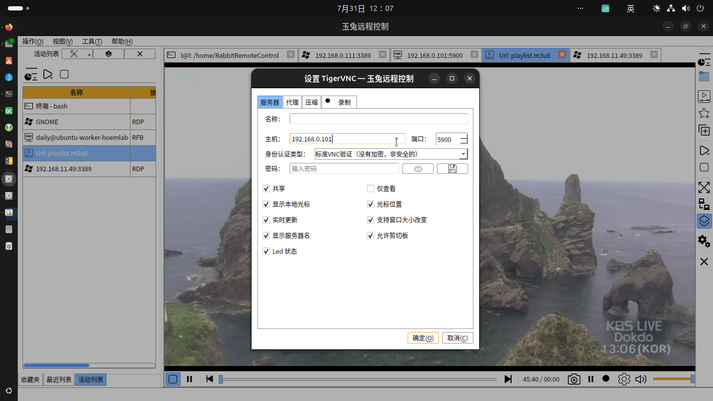

|
玉兔远程控制 0.1.0-bate7
|
载入中...
搜索中...
未找到
|
玉兔远程控制 0.1.0-bate7
|
作者: 康林 kl222.nosp@m.@126.nosp@m..com
**玉兔远程控制**是一个开源、跨平台、支持多协议的远程控制软件。
能让你在**任何地方**使用**任何设备和系统**通过**任意方式**远程管理**任意设备和系统**。
它的目标是简单、方便、易用、安全、提高工作效率。
它包括远程桌面、远程控制、文件传输（FTP、SFTP）、终端、远程终端（SSH、TELNET）、播放器、网络工具等功能。
| 主窗口 | 最近列表窗口 | 连接窗口 | 工作窗口 |
|---|---|---|---|
 |  |  |
| 默认样式 | 黑绿样式 | 黑色样式 | 白色样式 |
|---|---|---|---|
 |  |  |  |
https://github.com/user-attachments/assets/9ebdc7e6-ed7a-4813-afcf-7a04cd6f889b
因为本人没有 mac 设备，所以没有做编译与测试。请有设备的朋友自行测试。 欢迎有兴趣，有能力的朋友参与项目的开发。
如果你想为.nosp@m.本人捐赠.nosp@m.开发设备，.nosp@m.请联系：.nosp@m.kl222.nosp@m.@126.nosp@m..com
| Windows | Unix/linux | Android | MAC | |
|---|---|---|---|---|
| vnc | ✓ | ✓ | ✓ | ✓ |
| RDP | ✓ | ✓ | …… | ✓ |
| Spice | ||||
| Scrcpy |
| Windows | Unix/linux | Android | MAC | |
|---|---|---|---|---|
| 终端 | ✓ | ✓ | ✓ | |
| SSH | ✓ | ✓ | ✓ | |
| TELNET | ✓ | ✓ | ||
| 串口 | ✓ | ✓ | ✓ |
| Windows | Unix/linux | Android | MAC | |
|---|---|---|---|---|
| FTP | …… | …… | …… | …… |
| SFTP | …… | …… | …… | …… |
| Windows | Unix/linux | Android | MAC | |
|---|---|---|---|---|
| 播放器 | ✓ | ✓ | ✓ | ✓ |
| 局域网唤醒主机 | ✓ | ✓ | ✓ | ✓ |
| 截屏 | ✓ | ✓ | ✓ | |
| 网页浏览器 | ✓ | ✓ | ❌ | ✓ |
图例：
✓ : 完成; …… : 正在工作; ⭕ : 未完成; 空：未开始; ❌: 不支持
| 服务器 | 客户端 | 远程桌面 | 剪切板 | 文件传输 | 音频传输 | 资源重定向 | P2P | 代理 | 终端 | |
|---|---|---|---|---|---|---|---|---|---|---|
| RDP | ✓ | ✓ | ✓ | ✓ | …… | ✓ | …… | ✓ | ❌ | |
| RFB | …… | ✓ | ✓ | ✓ | ❌ | ❌ | ✓ | ✓ | ||
| Spice | ❌ | |||||||||
| Scrcpy | ❌ | |||||||||
| 终端 | ✓ | ❌ | ✓ | ❌ | ❌ | ❌ | ||||
| TELNET | ✓ | ❌ | ✓ | ❌ | ❌ | ❌ | ||||
| SSH | ✓ | ❌ | ✓ | ❌ | ❌ | |||||
| 串口 | ✓ | ❌ | ❌ | ❌ | ||||||
| FTP | ✓ | …… | ❌ | …… | ❌ | ❌ | ||||
| SFTP | …… | ❌ | …… | ❌ | ❌ |
图例：
✓ : 完成; …… : 正在工作; ⭕ : 未完成; 空：未开始; ❌: 不支持
| 代理 | P2P | |
|---|---|---|
| RabbitVNC | ✓ | ✓ |
| TigerVNC | ✓ | ✓ |
| LibVNC | ||
| FreeRDP |
图例：
✓ : 完成; …… : 正在工作; ⭕ : 未完成; 空：未开始; ❌: 不支持


| master 分支 | develop 分支 |
|---|---|
本软件如果对你有用，或者你喜欢它，请你捐赠，支持作者。谢谢！
如果不能显示，请打开：
联系：
请遵守本项目License.md和依赖库的许可协议，并感谢依赖库和工具的作者。

](https://gitlab.com/kl222/RabbitCommon/-/raw/master/Src/Resource/image/Contribute_zh_CN.png){kind=link}
{kind=link}